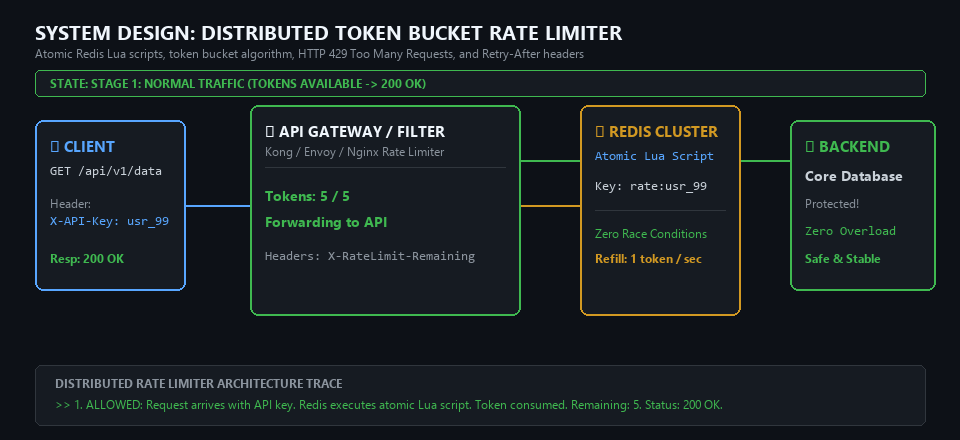

25 - System Design: Distributed Rate Limiter (Stripe / Cloudflare)
Executive Summary: In distributed architectures handling hundreds of thousands of requests per second, rate limiting is the primary defense line against brute-force attacks, web scraping, and denial-of-service traffic spikes. Scaling a rate limiter across a multi-server API gateway fleet introduces two critical distributed challenges: Race Conditions (concurrent requests bypassing limits via read-then-write cycles) and Synchronization Latency (every API request requiring a cross-network database call). Production distributed rate limiters solve this by executing Atomic Redis Lua Scripts with lazy token-refill formulas and local in-memory token batching.
🏢 Real-World Deep Dives: Detailed case studies of how Google & Netflix implement this in production are documented in REAL_WORLD_EXAMPLES.md.
⏱️ Prerequisites: What You Need to Know First
To get the most out of this module, make sure you understand:
- 01 - Client-Server Networking: HTTP response codes (
429 Too Many Requests) and custom headers. - 04 - API Gateways & Proxies: Edge reverse proxies, TLS termination, and middleware filters.
- 05 - Rate Limiting Algorithms: Mathematical principles of Token Bucket, Leaky Bucket, and Sliding Windows.
- 22 - System Design: Distributed In-Memory Cache: Redis cluster sharding and atomic Lua scripting.
🧒 The 30-Second Version (ELI5)
Imagine an amusement park with a popular roller coaster:
- The roller coaster can only hold 5 people every minute (Rate Limit: 5/min).
- At the entrance gate, the attendant has a bucket holding 5 brass tokens.
- When you want to ride, you drop 1 brass token into the turnstile slot and walk through (200 OK).
- If 10 people rush the gate at once, the first 5 drop tokens and enter. The 6th person sees an empty bucket and a flashing red sign: "Bucket empty! Please wait 30 seconds for the next token to drop!" (429 Too Many Requests).
- Every 12 seconds, a mechanical chute drops a new brass token into the bucket (Refill Rate), letting the next person through.
🍕 Everyday Analogy
| Rate Limiter Component | Rollercoaster Turnstile Analogy | Technical Reality in Distributed Systems |
|---|---|---|
| Token Bucket | Brass bucket holding up to 5 ride tokens | Redis hash entry: {tokens: 5, last_refill: timestamp} |
| Turnstile Attendant | Security guard checking tokens at the gate | API Gateway middleware (Kong, Envoy, Nginx) |
| Token Refill | Automated coin dispenser dropping 1 token every 12s | Lazy $O(1)$ timestamp delta formula on request arrival |
| Allowed Request | Dropping a token and walking through the gate | HTTP 200 OK forwarded to backend service |
| Throttled Request | Bouncer stopping guest: "Bucket empty, wait 12s!" | HTTP 429 Too Many Requests + Retry-After: 12 |
| Race Condition | Two guests grabbing the last brass token at the same millisecond | Two gateway threads reading tokens=1 concurrently |
| Atomic Lua Script | A steel trapdoor dispensing exactly 1 token to 1 hand | Single-threaded atomic script inside Redis |
🧩 The Problem It Solves
The Vulnerability of Unprotected APIs
Without a distributed rate limiter:
- Denial of Service (DoS): A runaway customer script or malicious attacker fires 100,000 requests/second against
/api/checkout, exhausting database connection pools and taking down the platform for all paying customers. - Credential Stuffing: Hackers test millions of stolen password combinations against
/api/loginwithout throttling. - Third-Party API Cost Explosion: Uncontrolled traffic spikes trigger massive billing surges on downstream paid services (like Stripe or Twilio).
The Challenge of Distributed Multi-Server Gateways
If your API gateway runs on 20 independent server instances:
- Local In-Memory Counter (Flawed): If each gateway keeps its own local counter in RAM, a user sending 100 requests load-balanced across 20 servers can legally execute $20 \times \text{limit}$ requests, completely defeating the rate limit!
- Central Database Counter (Race Condition Flaw):
- Step 1: Gateway A and Gateway B both read
count = 9simultaneously (Limit = 10).
- Step 1: Gateway A and Gateway B both read
- Step 2: Both gateways see
9 < 10, increment the counter to10, and both admit their requests. - Result: 11 requests are admitted instead of 10. Under 50 gateways, this race condition can double or triple the allowed traffic!
- The Solution: An atomic, centralized in-memory datastore (Redis) executing token refills and decrement operations in a single atomic step.
🖼️ Picture It: Architecture & Flow
High-Resolution Distributed Rate Limiter Animation
Below is an animated trace of incoming client requests, atomic Redis Lua evaluation, token consumption, HTTP 429 throttling, and timer refills:

Global API Gateway & Redis Sharding Flowchart
flowchart TD
subgraph Clients["Clients Tier"]
C1["👤 Client 1 (Mobile)"]
C2["🤖 Client 2 (Web Bot)"]
end
subgraph GatewayTier["Distributed API Gateway Fleet"]
LB["⚖️ L7 Load Balancer"]
GW1["⚡ API Gateway 1"]
GW2["⚡ API Gateway 2"]
C1 --> LB
C2 --> LB
LB --> GW1
LB --> GW2
end
subgraph RedisTier["Centralized Sharded Rate Limiting Tier"]
Redis[("⚡ Redis Cluster (Master / Replica)<br/>Key: rate_limit:user_id<br/>Script: Atomic Token Bucket Lua")]
GW1 -->|1. EVALSHA token_bucket.lua| Redis
GW2 -->|1. EVALSHA token_bucket.lua| Redis
end
subgraph BackendTier["Protected Core Microservices"]
Service["🏢 Core Application Database & APIs"]
Redis -->|"Under Limit: Return (true, remaining)"| GW1
GW1 -->|"2. HTTP 200 OK -> Forward"| Service
Redis -.->|"Over Limit: Return (false, retry_after)"| GW2
GW2 -.->|2. Return HTTP 429 Too Many Requests| C2
end
style Clients fill:#161b22,stroke:#58a6ff,stroke-width:2px;
style GatewayTier fill:#161b22,stroke:#58a6ff,stroke-width:2px;
style RedisTier fill:#161b22,stroke:#d29922,stroke-width:2px;
style BackendTier fill:#161b22,stroke:#3fb950,stroke-width:2px;
🔢 Walk-Through with Real Numbers
Let's estimate traffic, memory footprint, and network latency for a global rate limiting tier:
1. Traffic & Memory Sizing
- Peak Ingress Traffic: $100,000\text{ requests / second}$.
- Active User Base: $10,000,000\text{ users / day}$.
- Redis Key Structure:
- Key:
rate:<user_id>$\approx 32\text{ bytes}$. - Value:
{tokens: float, last_refill: float}$\approx 16\text{ bytes}$. - Redis internal hash overhead per key: $\approx 50\text{ bytes}$.
- Total per key: $\approx 100\text{ bytes}$.
- Key:
- Total Memory Footprint: $$\text{Memory} = 10,000,000 \times 100\text{ bytes} \approx \mathbf{1.0\text{ Gigabyte of RAM}}$$ A single small 4 GB Redis instance holds the rate limits for 10 million active users!
2. Network Latency & Synchronization Cost
If every request from the 20 API Gateways makes a synchronous network round-trip to Redis:
- Redis operations: $100,000\text{ ops / second}$.
- Network transit time inside datacenter: $0.5\text{ ms}$.
- While $0.5\text{ ms}$ is fast, $100\text{k req/s}$ places heavy load on Redis CPU cores.
The Local Token Batching Optimization:
- Each API Gateway locally reserves a batch of tokens (e.g. 10 tokens) from Redis.
- The Gateway serves the next 10 requests from its local RAM ($0.001\text{ ms}$) without contacting Redis!
- Only when local tokens are depleted does it contact Redis for another batch.
- Result: Reduces Redis network operations by $90%$ (from 100k down to 10k ops/sec) with zero loss of protection.
⚙️ How It Works Under the Hood
1. The Token Bucket Lazy Refill Algorithm (Zero Background Timers!)
A naive implementation runs background timer threads incrementing counters every second. At 10 million users, 10 million timer ticks per second would melt the CPU. The Production Solution: Lazy Refill on Request Arrival: When a request arrives at timestamp $T_{\text{now}}$:
- Fetch previous state: $(T_{\text{tokens}}, T_{\text{last}})$.
- Calculate time elapsed: $\Delta t = T_{\text{now}} - T_{\text{last}}$.
- Add refilled tokens: $$\text{New Tokens} = \min\big(\text{Capacity}, T_{\text{tokens}} + (\Delta t \times \text{Refill Rate})\big)$$
- If $\text{New Tokens} \ge 1$: deduct 1, update $T_{\text{last}} = T_{\text{now}}$, and allow the request! Complexity: Pure $O(1)$ arithmetic. Zero background timer threads!
2. Eliminating Race Conditions with Atomic Redis Lua Scripts
Because Redis executes Lua scripts as a single atomic transaction without interruption, the read-modify-write cycle is completely immune to race conditions:
(The complete production Lua script is separated into rate_limiter.lua, and its atomic execution is simulated in demo.py.)
3. Standard HTTP Response Headers (RFC 6585)
When rate limiting is enforced, the API Gateway communicates status transparently via HTTP response headers:
| Header | Meaning | Example Value |
|---|---|---|
X-RateLimit-Limit |
Maximum number of allowed requests in current window | 100 |
X-RateLimit-Remaining |
Number of remaining tokens available in current window | 42 |
X-RateLimit-Reset |
Unix timestamp when the bucket will be completely refilled | 1795372800 |
Retry-After |
Returned on 429: Number of seconds to sleep before retrying | 3 |
⚖️ Trade-Offs & Decision Matrix
| Algorithm | Bursts Allowed? | Memory Usage | Implementation Complexity | Primary Drawback |
|---|---|---|---|---|
| Token Bucket | Yes (up to capacity) | $O(1)$ per client (2 numbers) | Low (with lazy refill) | Burst traffic can temporarily spike backends |
| Leaky Bucket | ❌ No (smooth constant rate) | $O(1)$ queue size | Medium | Drops requests if queue fills up |
| Fixed Window | Yes (2x burst at boundary) | Lowest (1 integer counter) | Lowest | Boundary spike allows 2x limit at window turn |
| Sliding Window Log | ❌ No | High ($O(M)$ timestamps) | High | High memory overhead storing all request timestamps |
| Sliding Window Counter | Smooth estimation | Low (2 window counters) | Medium | Approximated count (assume uniform traffic) |
🚫 Common Mistakes & Production Pitfalls
-
The Fixed Window Boundary Burst Bug:
- Pitfall: Using a simple fixed window counter:
INCR rate:user:12:00. - Result: A user sends 100 requests at 11:59:59 PM, and another 100 requests at 12:00:01 AM. Both windows show 100 requests (legal), but the system processed 200 requests in 2 seconds! Always use Token Bucket or Sliding Window Counters to prevent boundary doubling.
- Pitfall: Using a simple fixed window counter:
-
Failing Open vs. Failing Closed During Redis Outages:
- Pitfall: If the Redis rate limiter cluster crashes, every API call throws a 500 error (Fail Closed), causing a total platform outage.
- Production Standard: Fail Open. If Redis is unreachable, log a critical alert, bypass rate limiting, and let traffic flow through to the backend while triggering emergency alerting. A degraded rate limiter is far better than a total platform blackout.
-
Using IP Address Exclusively for Rate Limiting:
- Pitfall: Rate limiting solely by client IP address (
req.ip). - Result: Large corporate offices, university campuses, or cellular carriers route thousands of distinct users through a single public NAT gateway IP. Limiting by IP blocks an entire university when one student exceeds the limit! Use API Keys or Authenticated User IDs whenever possible.
- Pitfall: Rate limiting solely by client IP address (
💻 Try It Yourself: Python Simulation
The companion simulation script demo.py implements:
- An $O(1)$ Token Bucket algorithm with lazy mathematical refills.
- A simulated Redis Atomic Lua Script execution eliminating race conditions across multiple gateway workers.
- Rapid burst testing: verifying that exactly 5 burst requests pass and subsequent requests return
HTTP 429 Too Many Requests. - Automated token recovery verification after a 1.0-second refill sleep.
Run it locally in your terminal:
python demo.py
🌍 Where You'll See It in Production
- Stripe API: Famous for their robust rate limiting architecture. Enforces multiple tiered limits: authentication limits (against brute-force attacks), read limits, and write limits using Redis clusters with atomic scripts.
- Cloudflare Rate Limiting: Operates at edge CDN servers globally, utilizing sliding-window counters to block malicious DDoS floods within milliseconds of reaching edge points of presence.
- GitHub REST API: Enforces 5,000 requests per hour for authenticated users and 60 requests per hour for unauthenticated users, communicating status via
x-ratelimit-remainingandx-ratelimit-resetheaders.
🎯 Top Interview Questions & Deep Answers
Q1: "How do you prevent race conditions in a distributed rate limiter with 50 API Gateway servers?"
Interviewer Goal: Testing candidate's knowledge of atomic primitives and distributed concurrency.
Model Answer:
"In a distributed gateway fleet, multiple servers concurrently receive requests for the same user. If servers use a naive GET count -> count++ -> SET count pattern:
- Server 1 and Server 2 both read
count = 9(where limit is 10). - Both see that $9 < 10$.
- Both increment to 10 and write back.
- Result: 11 requests are admitted, violating the rate limit contract.
The Solution is Redis Lua Scripting:
- We encapsulate the entire check, refill, and decrement logic inside a Lua script.
- Redis executes Lua scripts with single-threaded atomicity: while the script executes, no other command or script can run on that shard.
- The check and token decrement execute as an indivisible atomic operation in memory ($<100\ \mu\text{s}$). Zero race conditions are mathematically possible."
Q2: "What is the difference between Token Bucket and Leaky Bucket, and when would you choose one over the other?"
Interviewer Goal: Evaluating algorithm trade-offs and traffic shaping understanding.
Model Answer: "While both regulate throughput, they produce completely different traffic flow characteristics:
- Token Bucket:
- Tokens accumulate up to a maximum bucket capacity. Requests consume tokens.
- Allows bursts of traffic: If the bucket is full (capacity 20), an application can legally fire 20 requests in 1 millisecond.
- Best for: General-purpose web APIs (Stripe, GitHub), where user traffic naturally occurs in small bursts (e.g. loading a dashboard).
- Leaky Bucket:
- Requests enter a FIFO queue (the bucket) and leak out to the backend at a strictly constant, smooth rate.
- If the queue overflows, incoming requests are dropped.
- Best for: Traffic shaping in data ingestion pipelines, where downstream systems (like a database or third-party webhooks) require a smooth, constant flow without any sudden spikes."
Q3: "How do you handle rate limiting across multiple geographic data centers (e.g. US-East and EU-West)?"
Interviewer Goal: Testing global distributed state synchronization trade-offs.
Model Answer: "Synchronizing rate limits across global data centers presents a classic PACELC trade-off:
- If all global regions query a single centralized Redis cluster in US-East, a European user suffers an unacceptable $80\text{ ms}$ trans-Atlantic latency penalty on every API call.
Production Solutions:
- Geo-Partitioned / Local Rate Limiting:
- Allocate a portion of the user's quota to each region (e.g. 50% to US, 50% to EU). Local gateways enforce their local quota using local Redis clusters with sub-millisecond latency.
- Asynchronous Cross-Region Sync:
- Gateways enforce limits locally in RAM and periodically publish usage deltas asynchronously across a WAN message bus (Kafka/CRDTs). While small temporary overages ($<5%$) can occur during high cross-region traffic bursts, latency remains under $1\text{ ms}$.
- Session Affinity / Geo-DNS Routing:
- Route all requests from a given API key or user to the same geographic region via DNS or BGP Anycast."
Q4: "Where should the Rate Limiter be placed in the architecture: Client, API Gateway, or Middleware?"
Interviewer Goal: Assessing architectural layering and defense-in-depth principles.
Model Answer: "The optimal placement is at the API Gateway / Edge Reverse Proxy Layer:
- Client-Side Rate Limiting:
- Unreliable for security. Malicious attackers and compromised devices bypass client logic trivially. (Useful only as a polite SDK throttling mechanism to avoid unnecessary network calls).
- Application Middleware (Inside Core Microservices):
- Too late in the stack. By the time a request hits application containers, network bandwidth, TLS handshakes, and gateway connection pools have already been consumed.
- API Gateway (The Standard):
- Sits in front of all microservices (Envoy, Kong, Nginx).
- Rejects throttled traffic at the perimeter before it touches internal networks, protecting backend databases, thread pools, and business logic from resource exhaustion."
Q5: "What is the Sliding Window Counter algorithm, and how does it balance accuracy with low memory?"
Interviewer Goal: Assessing understanding of hybrid rate limiting algorithms.
Model Answer: "The Sliding Window Counter is a memory-efficient hybrid of Fixed Window and Sliding Window Log:
- Instead of storing every single request timestamp in memory (which uses megabytes of RAM under high traffic), it only stores two numbers: the request count of the previous window and the current window.
- When a request arrives at percentage $P$ into the current window, it calculates the approximated rolling count: $$\text{Count} = (\text{Previous Window Count} \times (1 - P)) + \text{Current Window Count}$$
- If $\text{Count} < \text{Limit}$, it increments the current window counter and allows the request.
- Accuracy: Assumes traffic in the previous window was distributed uniformly (typically $<1%$ error rate in real-world traffic).
- Memory: Consumes only two integers per client ($\approx 16\text{ bytes}$), providing smooth sliding-window protection with near-zero memory footprint."
✅ Check Yourself: Flash Quiz
1. Why does the Token Bucket algorithm require zero background timer threads in production?
Because tokens are refilled lazily on-demand when a request arrives. The server simply computes the elapsed time delta since the last request ($\Delta t = \text{now} - \text{last\_refill}$) and multiplies by the refill rate in $O(1)$ constant time, eliminating the CPU overhead of background timers.
2. What HTTP status code should an API Gateway return when a client exceeds their rate limit, and what header tells them how long to wait?
Return HTTP 429 Too Many Requests along with the
Retry-After header indicating the number of seconds the client must sleep before retrying.
3. Why is it dangerous to rely on client IP addresses as the sole rate limiting key?
Because thousands of distinct mobile users or corporate employees frequently share the exact same public IP address via NAT (Network Address Translation) or corporate proxies. Rate limiting by IP alone can inadvertently block an entire company or university when a single user misbehaves. Always rate limit by API Key, Session Token, or User ID when available.
📚 Go Deeper: Recommended Reading
- System Design Interview – An Insider's Guide (Volume 1) by Alex Xu — Chapter 4: Design a Rate Limiter.
- The Stripe Engineering Blog: Scaling your API with Rate Limiters (Paul Tarjan).
- Cloudflare Architecture: How Cloudflare handles Rate Limiting at the Edge.
- RFC 6585: Additional HTTP Status Codes (Section 4: 429 Too Many Requests).
🔗 Related Modules
- 01 - Client-Server Networking: HTTP status codes and headers.
- 04 - API Gateways & Proxies: Edge filtering and reverse proxy architecture.
- 05 - Rate Limiting: Mathematical principles of rate limiting algorithms.
- 22 - System Design: Distributed In-Memory Cache: High-performance Redis clusters.